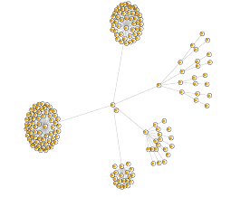
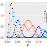
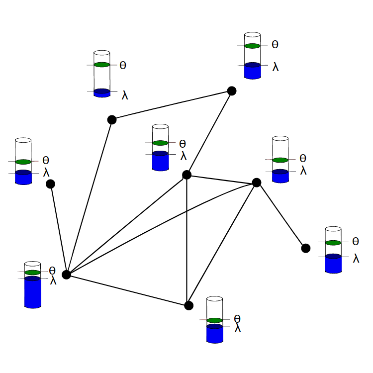
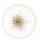
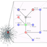
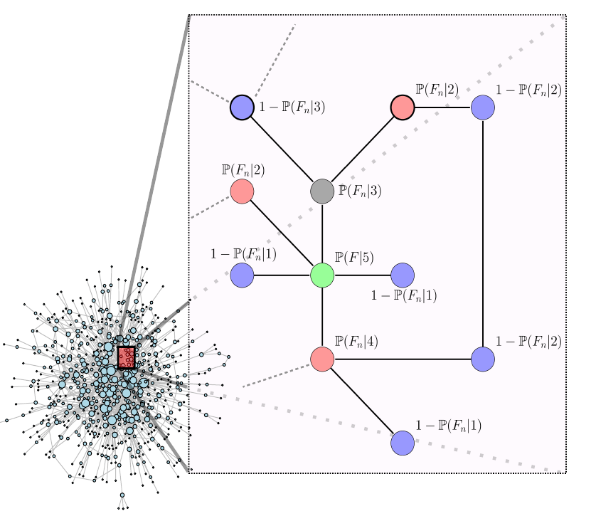
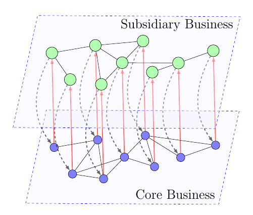

Dr. Rebekka Burkholz
I am a postdoctoral researcher at the Institute for Machine Learning at ETH Zurich in Switzerland. My research combines robust algorithm design, e.g. for cascade processes on complex networks and systemic risk, with the quest of a theoretical understanding of deep neural networks. From an applied side, I am particularly interested in problems where only limited amounts of data hint to their solution: as in international food trade and cardiology. I love to develop methodology tailored to such specific problems as well.
Publications»
«Publications
Publications in


International crop trade networks: The impact of shocks and cascades
|
[2019]
|
|
Burkholz, Rebekka;
Schweitzer, Frank
|
Environmental Research Letters,
pages: 114013,
volume: 14
|
more» «less
|
Abstract
Analyzing available FAO data from 176 countries over 21 years, we observe an increase of complexity in the international trade of maize, rice, soy, and wheat. A larger number of countries play a role as producers or intermediaries, either for trade or food processing. In consequence, we find that the trade networks become more prone to failure cascades caused by exogenous shocks. In our model, countries compensate for demand deficits by imposing export restrictions. To capture these, we construct higher-order trade dependency networks for the different crops and years. These networks reveal hidden dependencies between countries and provide an estimate of necessary stock reserves to protect countries from cascading export restrictions. They differ substantially from first order networks that do not take cascading effects into account. We find rice trade most prone to cascading export restrictions. A great number of Asian and African countries are most exposed to cascades. Noticeably, the main suppliers are similar for most of the crops: USA, Canada, Argentina, Brazil, and India. While shocks in the USA mainly affect South America and several Asian countries, the south of Africa is primarily dependent on American and Asian exporters. The north of Africa depends strongly on Europe, in particular via wheat imports.


Efficient message passing for cascade size distributions
|
[2019]
|
|
Burkholz, Rebekka
|
Scientific Reports,
volume: 9,
number: 6561
|
more» «less
|
Abstract
How big is the risk that a few initial failures of networked nodes amplify to large cascades that endanger the functioning of the system? Common answers refer to the average final cascade size. Two analytic approaches allow its computation: a) (heterogeneous) mean field approximation and b) belief propagation. The former applies to (infinitely) large locally tree-like networks, while the latter is exact on finite trees. Yet, cascade sizes can have broad and multi-modal distributions that are not well represented by their average. Full distribution information is essential to identify likely events and to estimate the tail risk, i.e. the probability of extreme events. We therefore present an efficient message passing algorithm that calculates the cascade size distribution in finite networks. It is exact on finite trees and for a large class of cascade processes. An approximate version applies to any network
structure and performs well on locally tree-like networks, as we show with several examples.


Explicit size distributions of failure cascades redefine systemic risk on finite networks
|
[2018]
|
|
Burkholz, Rebekka;
Herrmann, H. J.;
Schweitzer, Frank
|
Scientific Reports,
pages: 1--8
|
more» «less
|
Abstract
How big is the risk that a few initial failures of nodes in a network amplify to large cascades that span a substantial share of all
nodes? Predicting the final cascade size is critical to ensure the functioning of a system as a whole. Yet, this task is hampered
by uncertain or changing parameters and missing information. In infinitely large networks, the average cascade size can often
be well estimated by established approaches building on local tree approximations and mean field approximations. Yet, as
we demonstrate, in finite networks, this average does not even need to be a likely outcome. Instead, we find broad and even
bimodal cascade size distributions. This phenomenon persists for system sizes up to
10
7
and different cascade models, i.e. it is
relevant for most real systems. To show this, we derive explicit closed-form solutions for the full probability distribution of the
final cascade size. We focus on two topological limit cases, the complete network representing a dense network with a very
narrow degree distribution, and the star network representing a sparse network with a inhomogeneous degree distribution.
Those topologies are of great interest, as they either minimize or maximize the average cascade size and are common motifs
in many real world networks.


Correlations between thresholds and degrees: An analytic approach to model attacks and failure cascades
|
[2018]
|
|
Burkholz, Rebekka;
Schweitzer, Frank
|
Phys. Rev. E,
volume: 98,
number: 2
|
more» «less
|
Abstract
Two node variables determine the evolution of cascades in random networks: a node's degree and threshold. Correlations between both fundamentally change the robustness of a network, yet, they are disregarded in standard analytic methods as local tree or heterogeneous mean field approximations because of the bad tractability of order statistics. We show how they become tractable in the thermodynamic limit of infinite network size. This enables the analytic description of node attacks that are characterized by threshold allocations based on node degree. Using two examples, we discuss possible implications of irregular phase transitions and different speeds of cascade evolution for the control of cascades.


A framework for cascade size calculations on random networks
|
[2018]
|
|
Burkholz, Rebekka;
Schweitzer, Frank
|
Physical Review E,
volume: 97,
number: 4
|
more» «less
|
Abstract
We present a framework to calculate the cascade size evolution for a large class of cascade models
on random network ensembles in the limit of infinite network size. Our method is exact and applies
to network ensembles with almost arbitrary degree distribution, degree-degree correlations and, in
case of threshold models, for arbitrary threshold distribution. With our approach, we shift the
perspective from the known branching process approximations to the iterative update of suitable
probability distributions. Such distributions are key to capture cascade dynamics that involve
possibly continuous quantities and that depend on the cascade history, e.g. if load is accumulated
over time. As a proof of concept, we provide two examples: (a) Constant load models that cover
many of the analytically tractable casacade models, and, as a highlight, (b) a fiber bundle model
that was not tractable by branching process approximations before. Our derivations cover the whole
cascade dynamics, not only their steady state. This allows to include interventions in time or further
model complexity in the analysis.


Modeling the formation of R&D alliances: An agent-based model with empirical validation
|
[2017]
|
|
Tomasello, Mario Vincenzo;
Burkholz, Rebekka;
Schweitzer, Frank
|
Economics,
number: 2017-107
|
more» «less
|
Abstract
The authors develop an agent-based model to reproduce the size distribution of R&D alliances of firms. Agents are uniformly selected to initiate an alliance and to invite collaboration partners. These decide about acceptance based on an individual threshold that is compared with the utility expected from joining the current alliance. The benefit of alliances results from the fitness of the agents involved. Fitness is obtained from an empirical distribution of agent's activities. The cost of an alliance reflects its coordination effort. Two free parameters ac and a1 scale the costs and the individual threshold. If initiators receive R rejections of invitations, the alliance formation stops and another initiator is selected. The three free parameters (ac; a1; R) are calibrated against a large scale data set of about 15,000 firms engaging in about 15,000 R&D alliances over 26 years. For the validation of the model the authors compare the empirical size distribution with the theoretical one, using confidence bands, to find a very good agreement. As an asset of our agent-based model, they provide an analytical solution that allows to reduce the simulation effort considerably. The analytical solution applies to general forms of the utility of alliances. Hence, the model can be extended to other cases of alliance formation. While no information about the initiators of an alliance is available, the results indicate that mostly firms with high fitness are able to attract newcomers and to establish larger alliances.


How damage diversification can reduce systemic risk
|
[2016]
|
|
Burkholz, Rebekka;
Garas, Antonios;
Schweitzer, Frank
|
Physical Review E,
pages: 042313,
volume: 93
|
more» «less
|
Abstract
We study the influence of risk diversification on cascading failures in weighted complex networks, where weighted directed links represent exposures between nodes. These weights result from different diversification strategies and their adjustment allows us to reduce systemic risk significantly by topological means. As an example, we contrast a classical exposure diversification (ED) approach with a damage diversification (DD) variant. The latter reduces the loss that the failure of high degree nodes generally inflict to their network neighbors and thus hampers the cascade amplification. To quantify the final cascade size and obtain our results, we develop a branching process approximation taking into account that inflicted losses cannot only depend on properties of the exposed, but also of the failing node. This analytic extension is a natural consequence of the paradigm shift from individual to system safety. To deepen our understanding of the cascade process, we complement this systemic perspective by a mesoscopic one: an analysis of the failure risk of nodes dependent on their degree. Additionally, we ask for the role of these failures in the cascade amplification.


Systemic risk in multiplex networks with asymmetric coupling and threshold feedback
|
[2016]
|
|
Burkholz, Rebekka;
Leduc, Matt;
Garas, Antonios;
Schweitzer, Frank
|
Physica D,
pages: 64--72,
volume: 323-324
|
more» «less
|
Abstract
We study cascades on a two-layer multiplex network, with asymmetric feedback that depends on the coupling strength between the layers. Based on an analytical branching process approximation, we calculate the systemic risk measured by the final fraction of failed nodes on a reference layer. The results are compared with the case of a single layer network that is an aggregated representation of the two layers. We find that systemic risk in the two-layer network is smaller than in the aggregated one only if the coupling strength between the two layers is small. Above a critical coupling strength, systemic risk is increased because of the mutual amplification of cascades in the two layers. We even observe sharp phase transitions in the cascade size that are less pronounced on the aggregated layer. Our insights can be applied to a scenario where firms decide whether they want to split their business into a less risky core business and a more risky subsidiary business. In most cases, this may lead to a drastic increase of systemic risk, which is underestimated in an aggregated approach.
Talks»
«Talks
Talks
A framework for cascade size calculations on random networks
[Nov. 30, 2016 - Dec. 2, 2016]
Complex Networks 2016: The 5th International Workshop on Complex Networks and their Applications, Milan
Systemic Risk: From Generic Models to Cascades in Food Trade
[Oct. 3, 2016 - Oct. 3, 2016]
Computational Social Science seminar series, ETH Zurich
Cascade processes in food trade networks
[June 22, 2016 - June 24, 2016]
WEHIA 2016
Cascades in Maize Trade Networks
[June 21, 2015 - June 26, 2015]
Tackling World Food System Challenges: Across Disciplines, Sectors, and Scales, Ascona (Switzerland)
Awards: Poster presentation awarded with CSF Best Contribution Award by Young Scientist
Cascades on Multiplexes with Threshold Feedback
[June 10, 2015]
International Forum on Knowledge Asset Dynamics (IFKAD 2015), Bari, Italy
Cascades in Maize Trade Networks
[June 3, 2015 - June 3, 2015]
NetSci 2015, Zaragoza (Spain)
Cascades on Multiplexes with Threshold Feedback
[June 2, 2015]
Satellite Workshop "NetONets2015", NetSci 2015, Zaragoza, Spain
How damage diversification can reduce systemic risk
[June 1, 2015]
Satellite Workshop "Information, Self-Organizing Dynamics, and Synchronization on Complex Networks II", NetSci 2015, Zaragoza, Spain
Systemic risk as emergent phenomenon
[Jan. 16, 2015]
ETH Risk Center Dialogue Event, ETH Zurich, Switzerland
The Impact of Regulating Capital Buffers on Systemic Risk
[Dec. 15, 2014 - Dec. 19, 2014]
Regulating Systemic Risk: insights from mathematical modeling, Newton Institute, Cambridge (UK)
Modeling Systemic Risk and Risk Diversification
[Sept. 22, 2014 - Sept. 26, 2014]
Monitoring Systemic Risk: Data, Models and Metrics, Newton Institute, Cambridge (UK)
News
- I am delighted to give two talks at NetSci 2017 in Indianapolis! The first one is a lightning talk (June 19th) about work with Frank Schweitzer on systemic risk in international food trade. In the second one (2:20 pm June 23rd), I will show how to tackle analytically many cascade models that are nortoriously hard to solve - including certain fiber bundle models.
- I look very forward to the SIAM workshop on NETWORK SCIENCE, which takes place in Pittsburgh from 13-14th July and where I will present a framework for cascade size calculations on random networks.
- In between those two events, I am excited to visit Asuman Ozdaglar and her group at MIT!
Short CV
Since June 2017, I work with Joachim Buhmann as PostDoc at the Institute of Machine Learning at ETH Zurich. From June 2016 - May 2017, I was a PostDoc at the Chair of Systems Design headed by my doctoral father Frank Schweitzer at ETH Zurich. My PhD research about systemic risk (February 2013 - May 2016) was part of the ETH48 project at the ETH Risk Center and co-supervised by Hans J. Herrmann. My thesis has been nominated for the Zurich Insurance Prize (decision expected in 2017) and my work on systemic risk in international maize trade won the CSF Best Contribution Award. Before moving to Zurich, I interned at d-fine and Deutsche Bank in Frankfurt am Main (Germnay) to experience the financial industry. I enjoyed studying Physics (B.Sc.) and Mathematics (B.Sc.,M.Sc) at TU Darmstadt (Germany) from October 2006 to March 2011 and at Lund University from September 2008 - June 2009. I loved to explore the realms of stochastic as well as deterministic partial differential equations, fluid dynamics, numerical analysis, and optimization. I am very grateful to Evangelisches Studienwerk Villigst for the academic and ideational scholarship and to Femtec for the soft skill trainings as well as the great network.
|